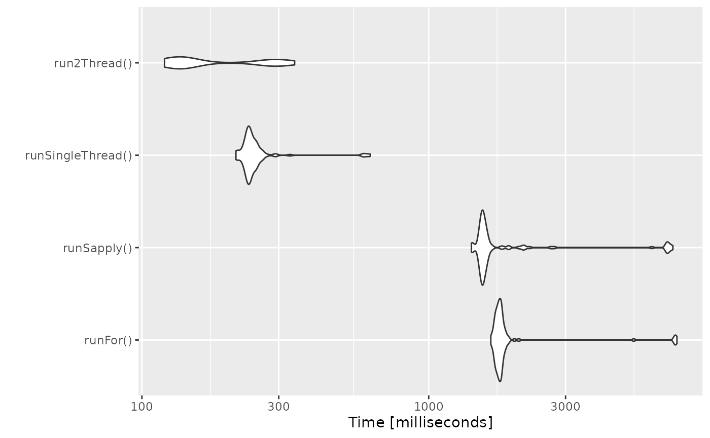
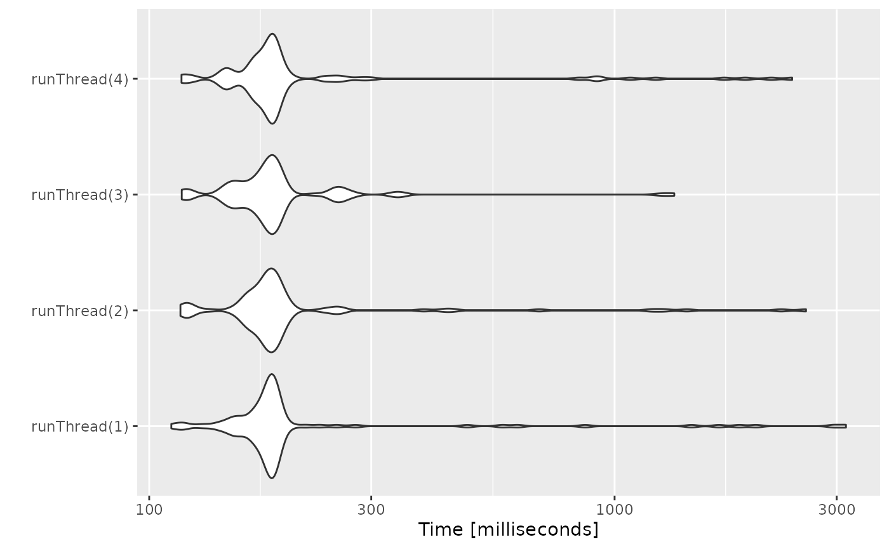

RxODE-speed.RmdRxODE originally developed as an ODE solver that allowed an ODE solve for a single subject. This flexibility is still supported.
The original code from the RxODE tutorial is below:
library(RxODE)
library(microbenchmark)
library(mvnfast)
mod1 <- RxODE({
C2 = centr/V2;
C3 = peri/V3;
d/dt(depot) = -KA*depot;
d/dt(centr) = KA*depot - CL*C2 - Q*C2 + Q*C3;
d/dt(peri) = Q*C2 - Q*C3;
d/dt(eff) = Kin - Kout*(1-C2/(EC50+C2))*eff;
eff(0) = 1
})
## Create an event table
ev <- et() %>%
et(amt=10000, addl=9,ii=12) %>%
et(time=120, amt=20000, addl=4, ii=24) %>%
et(0:240) ## Add Sampling
nsub <- 100 # 100 subproblems
sigma <- matrix(c(0.09,0.08,0.08,0.25),2,2) # IIV covariance matrix
mv <- rmvn(n=nsub, rep(0,2), sigma) # Sample from covariance matrix
CL <- 7*exp(mv[,1])
V2 <- 40*exp(mv[,2])
params.all <- cbind(KA=0.3, CL=CL, V2=V2, Q=10, V3=300,
Kin=0.2, Kout=0.2, EC50=8)The slowest way to code this is to use a for loop. In this example we will enclose it in a function to compare timing.
In general for R, the apply types of functions perform better than a for loop, so the tutorial also suggests this speed enhancement
runSapply <- function(){
res <- apply(params.all, 1, function(theta)
mod1$run(theta, ev)[, "eff"])
}You can also have RxODE solve all the subject simultaneously without collecting the results in R, using a single threaded solve.
The data output is slightly different here, but still gives the same information:
RxODE supports multi-threaded solves, so another option is to have 2 threads (called cores in the solve options, you can see the options in rxControl() or rxSolve()).
Now the moment of truth, the timings:
bench <- microbenchmark(runFor(), runSapply(), runSingleThread(),run2Thread())
print(bench)
#> Unit: milliseconds
#> expr min lq mean median uq max
#> runFor() 378.69919 421.19537 488.68936 469.74870 539.54518 776.17576
#> runSapply() 385.60171 428.18507 496.95198 475.42561 551.86382 764.74782
#> runSingleThread() 84.76927 88.83219 91.27524 90.59540 92.84831 111.75093
#> run2Thread() 45.82354 47.94636 50.28038 48.84153 50.01240 85.21577
#> neval
#> 100
#> 100
#> 100
#> 100plot(bench)
It is clear that the largest jump in performance when using the solve method and providing all the parameters to RxODE to solve without looping over each subject with either a for or a sapply. The number of cores/threads applied to the solve also plays a role in the solving.
We can explore the number of threads further with the following code:
runThread <- function(n){
solve(mod1, params.all, ev, cores=n)[,c("sim.id", "time", "eff")]
}
bench <- eval(parse(text=sprintf("microbenchmark(%s)",
paste(paste0("runThread(", seq(1, rxCores()),")"),
collapse=","))))
print(bench)
#> Unit: milliseconds
#> expr min lq mean median uq max neval
#> runThread(1) 86.71483 88.90789 90.90139 90.07052 91.77893 99.36879 100
#> runThread(2) 46.06605 47.41298 48.63189 48.34977 49.16244 65.85228 100
#> runThread(3) 33.22615 34.08368 35.18782 34.98914 35.68434 42.78696 100
#> runThread(4) 25.16860 26.77719 28.12555 27.32454 28.20939 71.34907 100
#> runThread(5) 21.77951 22.96874 24.94550 23.80573 25.79504 39.74041 100
#> runThread(6) 19.58286 20.67719 22.64244 21.54895 23.72943 34.32715 100
#> runThread(7) 25.16275 26.53954 28.86746 28.52998 31.05980 34.45888 100
#> runThread(8) 23.42218 25.41148 26.76173 26.64181 28.30055 30.74611 100
#> runThread(9) 21.62823 23.12898 24.91313 25.33113 26.38699 28.98369 100
#> runThread(10) 20.67313 22.45824 23.81591 23.81095 24.95798 31.01109 100
#> runThread(11) 20.18049 21.72975 23.31940 23.41599 24.43565 35.70334 100
#> runThread(12) 21.17005 22.37070 25.38606 23.55635 26.93701 47.56791 100plot(bench)
There is a suite spot in speed vs number or cores. The system type, complexity of the ODE solving and the number of subjects may affect this arbitrary number of threads. 4 threads is a good number to use without any prior knowledge because most systems these days have at least 4 threads (or 2 processors with 4 threads).
Before some of the parallel solving was implemented, the fastest way to run RxODE was with lapply. This is how Rik Schoemaker created the data-set for nlmixr comparisons:
library(RxODE)
library(data.table)
#Define the RxODE model
ode1 <- "
d/dt(abs) = -KA*abs;
d/dt(centr) = KA*abs-(CL/V)*centr;
C2=centr/V;
"
#Create the RxODE simulation object
mod1 <- RxODE(model = ode1)
#Population parameter values on log-scale
paramsl <- c(CL = log(4),
V = log(70),
KA = log(1))
#make 10,000 subjects to sample from:
nsubg <- 2500 # subjects per dose
doses <- c(10, 30, 60, 120)
nsub <- nsubg * length(doses)
#IIV of 30% for each parameter
omega <- diag(c(0.09, 0.09, 0.09))# IIV covariance matrix
sigma <- 0.2
#Sample from the multivariate normal
set.seed(98176247)
library(MASS)
mv <-
mvrnorm(nsub, rep(0, dim(omega)[1]), omega) # Sample from covariance matrix
#Combine population parameters with IIV
params.all <-
data.table(
"ID" = seq(1:nsub),
"CL" = exp(paramsl['CL'] + mv[, 1]),
"V" = exp(paramsl['V'] + mv[, 2]),
"KA" = exp(paramsl['KA'] + mv[, 3])
)
#set the doses (looping through the 4 doses)
params.all[, AMT := rep(1000 * doses,nsubg)]
Startlapply <- Sys.time()
#Run the simulations using lapply for speed
s = lapply(1:nsub, function(i) {
#selects the parameters associated with the subject to be simulated
params <- params.all[i]
#creates an eventTable with 7 doses every 24 hours
ev <- eventTable()
ev$add.dosing(
dose = params$AMT,
nbr.doses = 1,
dosing.to = 1,
rate = NULL,
start.time = 0
)
#generates 4 random samples in a 24 hour period
ev$add.sampling(c(0, sort(round(sample(runif(600, 0, 1440), 4) / 60, 2))))
#runs the RxODE simulation
x <- as.data.table(mod1$run(params, ev))
#merges the parameters and ID number to the simulation output
x[, names(params) := params]
})
#runs the entire sequence of 10000 subjects and binds the results to the object res
res = as.data.table(do.call("rbind", s))
Stoplapply <- Sys.time()
print(Stoplapply - Startlapply)
#> Time difference of 1.050959 minsBy applying some of the new parallel solving concepts you can simply run the same simulation both with less code and faster:
rx <- RxODE({
CL = log(4)
V = log(70)
KA = log(1)
CL = exp(CL + eta.CL)
V = exp(V + eta.V)
KA = exp(KA + eta.KA)
d/dt(abs) = -KA*abs;
d/dt(centr) = KA*abs-(CL/V)*centr;
C2=centr/V;
})
omega <- lotri(eta.CL ~ 0.09,
eta.V ~ 0.09,
eta.KA ~ 0.09)
doses <- c(10, 30, 60, 120)
startParallel <- Sys.time()
ev <- do.call("rbind",
lapply(seq_along(doses), function(i){
et() %>%
et(amt=doses[i]) %>% # Add single dose
et(0) %>% # Add 0 observation
## Generate 4 samples in 24 hour period
et(lapply(1:4, function(...){c(0, 24)})) %>%
et(id=seq(1, nsubg) + (i - 1) * nsubg) %>%
## Convert to data frame to skip sorting the data
## When binding the data together
as.data.frame
}))
## To better compare, use the same output, that is data.table
res <- rxSolve(rx, ev, omega=omega, returnType="data.table")
#> [====|====|====|====|====|====|====|====|====|====] 0:00:01
endParallel <- Sys.time()
print(endParallel - startParallel)
#> Time difference of 4.734872 secsYou can see a striking time difference between the two methods; A few things to keep in mind:
RxODE uses mvnfast for simulation of eta values. This uses the thread safe sumo random number generator. Therefore the results are expected to be different (also the random samples are taken in a different order which would be different)
This prior simulation was run in R 3.5, which has a different random number generator so the results in this simulation will be different from the actual nlmixr comparison when using the slower simulation.
This speed comparison used data.table. RxODE uses data.table internally (when available) try to speed up sorting, so this would be different than installations where data.table is not installed. You can force RxODE to use order() when sorting by using forderForceBase(TRUE). In this case there is little difference between the two, though in other examples data.table’s presence leads to a speed increase (and less likely it could lead to a slowdown).
The version since the tutorial has even more ways to run multi-subject simulations, including adding variability in sampling and dosing times with et() (see RxODE events for more information), ability to supply both an omega and sigma matrix as well as adding as a thetaMat to R to simulate with uncertainty in the omega, sigma and theta matrices; see RxODE simulation vignette.
The session information:
sessionInfo()
#> R version 3.6.0 (2019-04-26)
#> Platform: x86_64-pc-linux-gnu (64-bit)
#> Running under: Gentoo/Linux
#>
#> Matrix products: default
#> BLAS: /usr/lib64/libblas.so.3.8.0
#> LAPACK: /usr/lib64/liblapack.so.3.8.0
#>
#> locale:
#> [1] LC_CTYPE=en_US.utf8 LC_NUMERIC=C
#> [3] LC_TIME=en_US.utf8 LC_COLLATE=en_US.utf8
#> [5] LC_MONETARY=en_US.utf8 LC_MESSAGES=en_US.utf8
#> [7] LC_PAPER=en_US.utf8 LC_NAME=C
#> [9] LC_ADDRESS=C LC_TELEPHONE=C
#> [11] LC_MEASUREMENT=en_US.utf8 LC_IDENTIFICATION=C
#>
#> attached base packages:
#> [1] stats graphics grDevices utils datasets methods base
#>
#> other attached packages:
#> [1] MASS_7.3-51.4 data.table_1.12.8 mvnfast_0.2.5
#> [4] microbenchmark_1.4-7 RxODE_0.9.2-0
#>
#> loaded via a namespace (and not attached):
#> [1] Rcpp_1.0.3 compiler_3.6.0 pillar_1.4.3 sys_3.3
#> [5] PreciseSums_0.3 tools_3.6.0 digest_0.6.25 lattice_0.20-38
#> [9] evaluate_0.14 memoise_1.1.0 lifecycle_0.2.0 tibble_2.1.3
#> [13] gtable_0.3.0 pkgconfig_2.0.3 rlang_0.4.5 Matrix_1.2-17
#> [17] yaml_2.2.1 pkgdown_1.4.1 xfun_0.12 stringr_1.4.0
#> [21] dplyr_0.8.5 knitr_1.28 desc_1.2.0 fs_1.3.2
#> [25] rprojroot_1.3-2 grid_3.6.0 tidyselect_1.0.0 glue_1.3.1
#> [29] R6_2.4.1 rmarkdown_2.1 dparser_0.1.8 ggplot2_3.3.0
#> [33] purrr_0.3.3 magrittr_1.5 units_0.6-5 backports_1.1.5
#> [37] scales_1.1.0 htmltools_0.4.0 assertthat_0.2.1 mime_0.9
#> [41] colorspace_1.4-1 stringi_1.4.6 lotri_0.2.1 munsell_0.5.0
#> [45] markdown_1.1 crayon_1.3.4